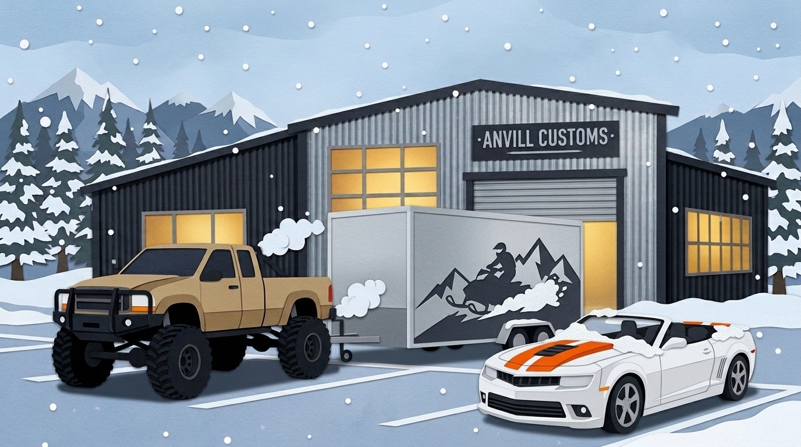
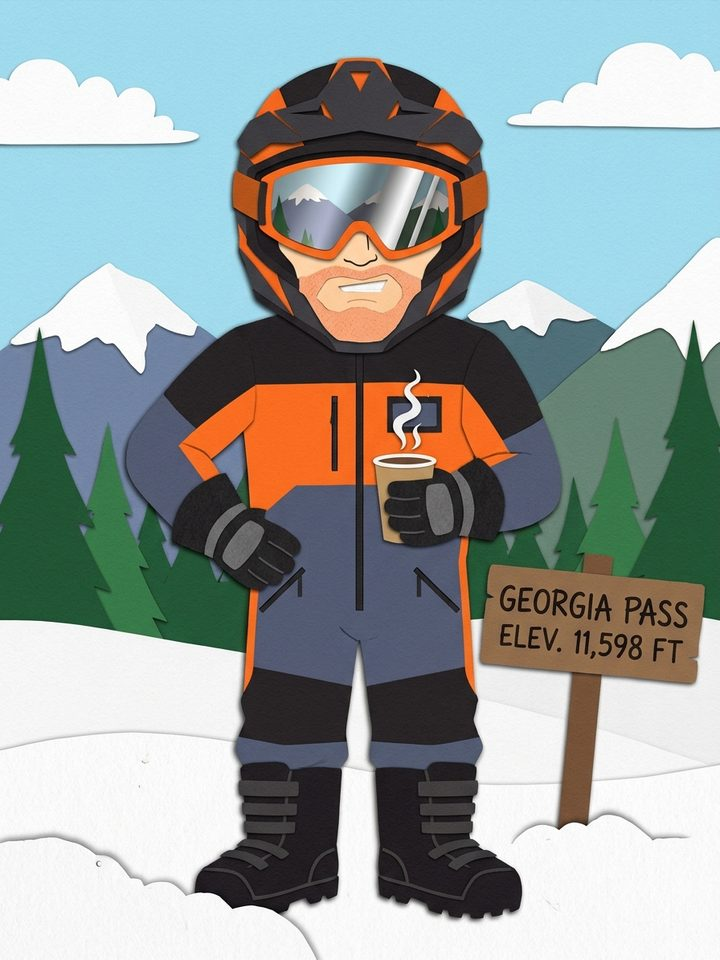
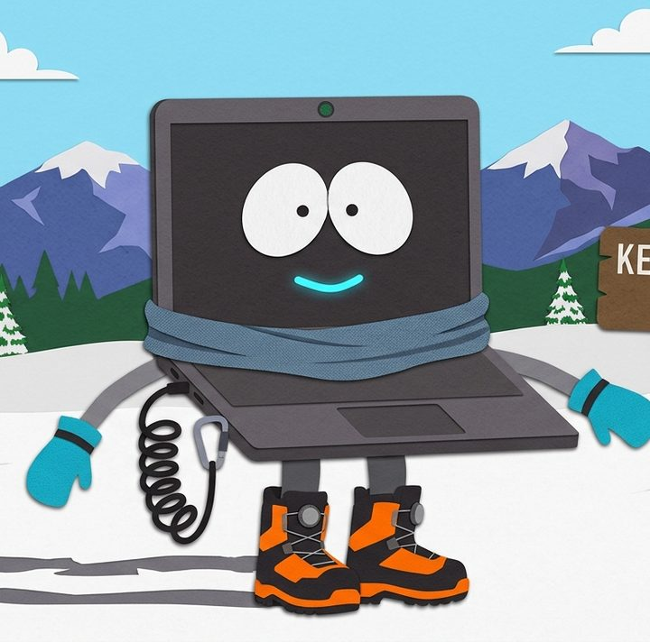
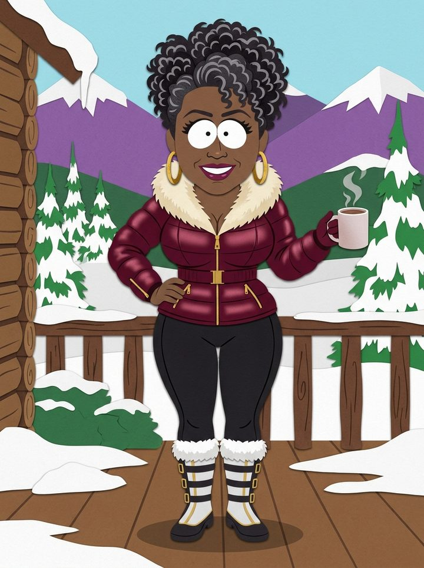
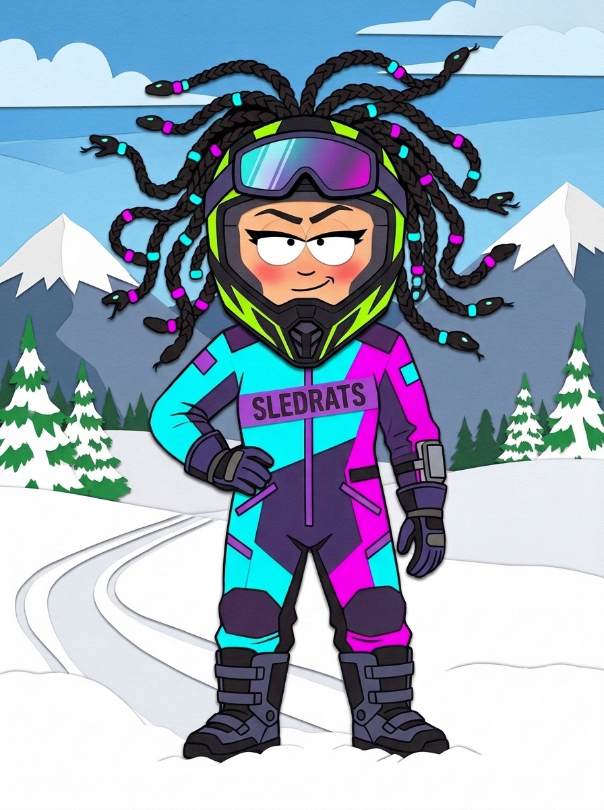
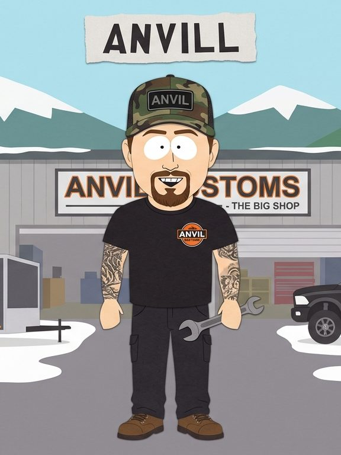
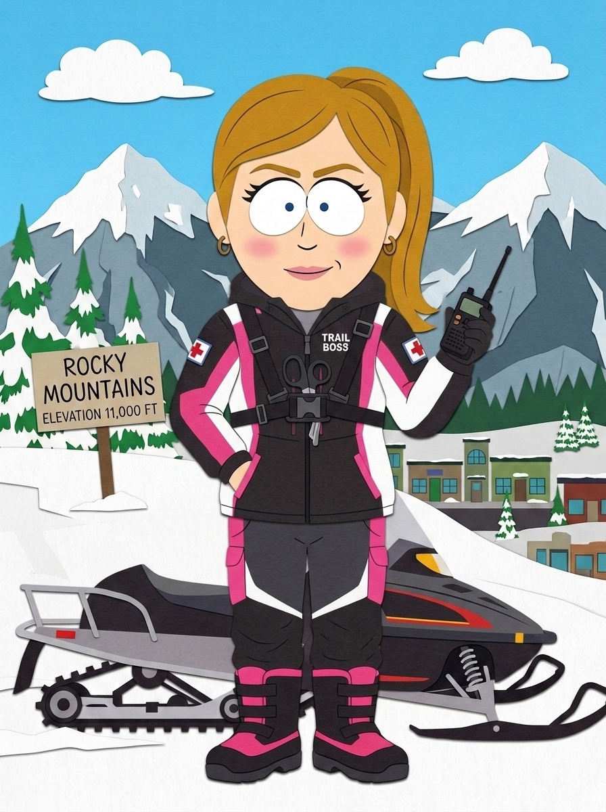
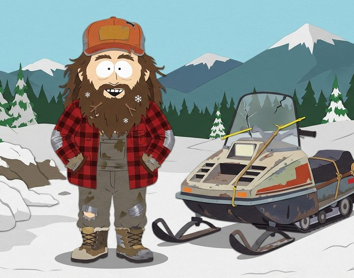
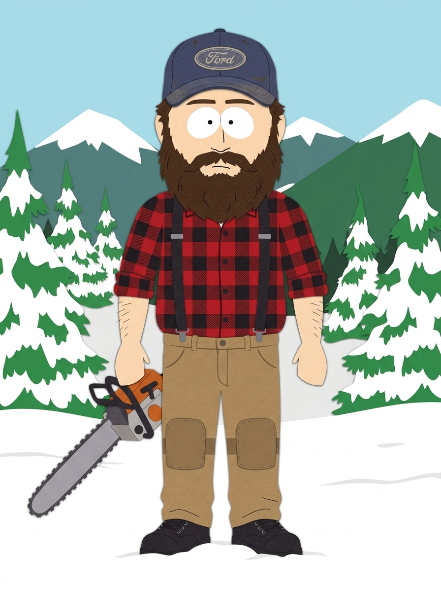
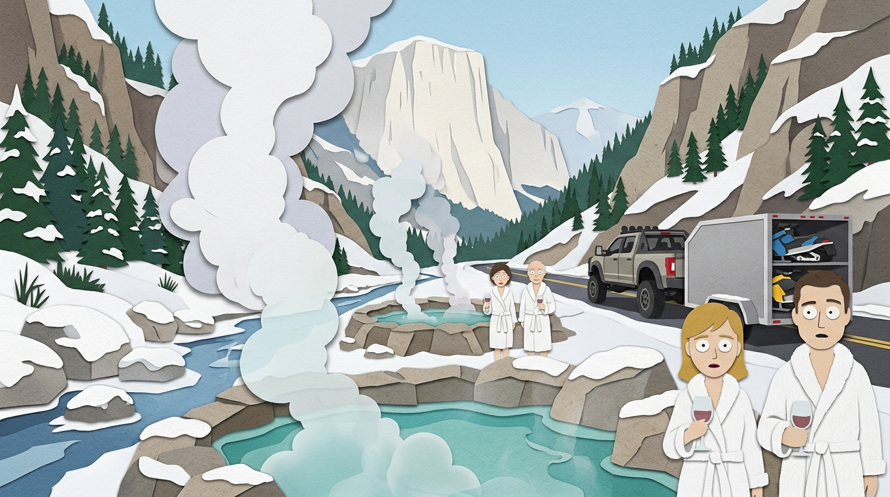

Ridge Glider & Angel
A mountain rider who never puts the top up, and the tactical laptop co-pilot who has opinions about that. Together they take on Colorado's highest, coldest passes with too much coffee and not enough sense.
▶ Watch on YouTube
Meet the crew
Eight regulars, one battered two-stroke, and a fleet of mountain sleds.

Ridge Glider
Unflappable mountain swagger, sensory-first coffee connoisseur, and convertible purist. Believes weather advisories are merely unsolicited opinions and fresh powder cures everything.
Polaris Boost · orange & black
Angel
Living, high-tech tactical co-pilot with a glowing cyan grin and zero filter. Tracks windchill, calculates avalanche probabilities, and questions Ridge Glider’s life choices from her heated dash mount.
Ridge's dash mount
Mama Hen
Glamorous cabin matriarch with Tina Turner warmth and total authority. Voice of sanity who keeps the coffee hot. Rides her 9R only when the mood strikes—otherwise holding court by the fireplace.
Polaris 9R · pink & black
Medusa
Leader of the fearless SledRats crew, backcountry icon, and Ridge’s competitive peer on the ridge line. Fast, fierce, and always ready to bet a round of hot cider that she'll take the Divide first.
Polaris Boost · teal & pink
Anvill
Runs the Big Shop with sleeve tattoos, welding sparks, and laid-back mastery. If it has an engine or a hitch, he can build it and box the tunnel before the coffee finishes brewing. Built the trailer—it’d be rude not to haul it.
Polaris 9R · black & red
Trail Boss
High-stakes ER trauma nurse, backcountry mountain marshal, and loving voice of reason. Playfully ribs the boys with a warm smile, but stands ready with trauma shears the second bravado meets gravity.
Polaris 9R · black & pink
Hillbilly
Twenty-one, ruggedly athletic, and permanently broke. Keeps a smoky 1989 barn-find two-stroke alive on ether, prayers, and baling wire while perpetually sweating trailer lot rent with his cousin Woody.
1989 barn-find clunker
Woody
Hillbilly's stoic cousin. Same stature as Anvill, compact mountain tank under an old Ford cap. Speaks in gentle drawls, bucks timber by day, and deadlifts stuck 450-pound snowmobiles with his bare hands.
Polaris RMK Pro · blueThe Run to Tincup
First storm of the year. One shop, one convoy, one pass over the Continental Divide, and a hot spring waiting at the end.
- 01The Big ShopPark County
Trailers loaded, thermoses filled, avalanche advisory reads simply "DON'T."
- 02Chalk CreekCR 162
The convoy rolls past the steaming pools. Hillbilly asks for a dip. Denied.
- 03St. Elmo10,000 ft
The plowed road ends in an eight-foot bank. Sleds off the trailer.
- 04Tincup Pass12,154 ft
A shredded belt, a bare-handed deadlift, and a tie race to the Divide.
- 05Tincup10,157 ft
A town buried to its eaves. Wi-Fi: a distant memory.
- 06The Hot SpringsMount Princeton
Steam, snow, cold beer, and a tiny espresso under a tiki umbrella.

"Current telemetry on Tincup Pass: fourteen below, winds at forty-two knots, visibility thirty feet, and the local avalanche advisory is simply the word: DON'T."Angel, Episode 1
Ride along on YouTube
Episodes land on the channel first. Subscribe so you don't miss the pilot.